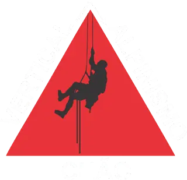
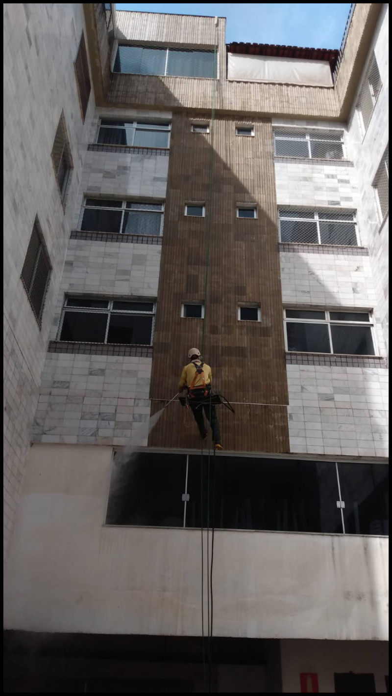
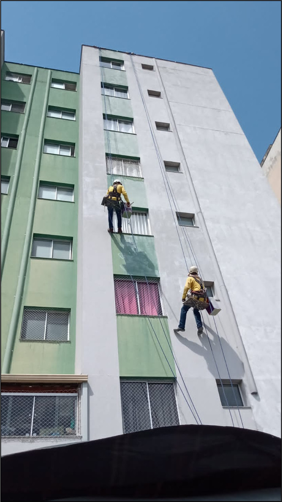
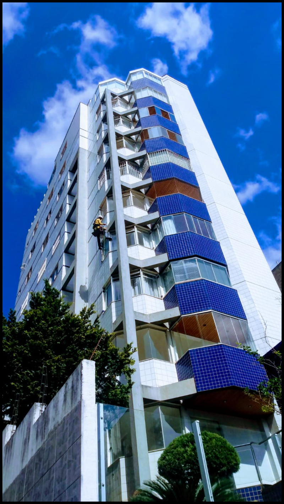
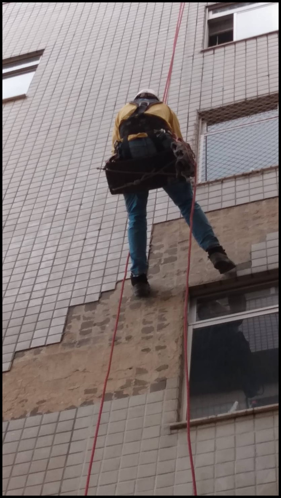
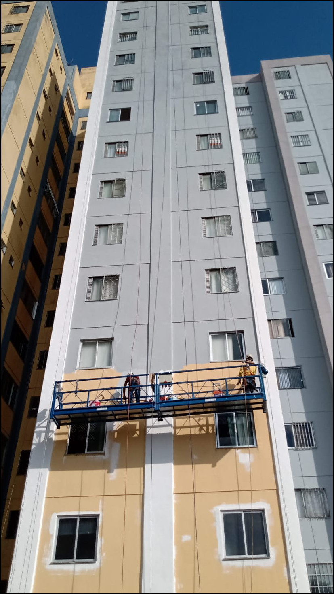
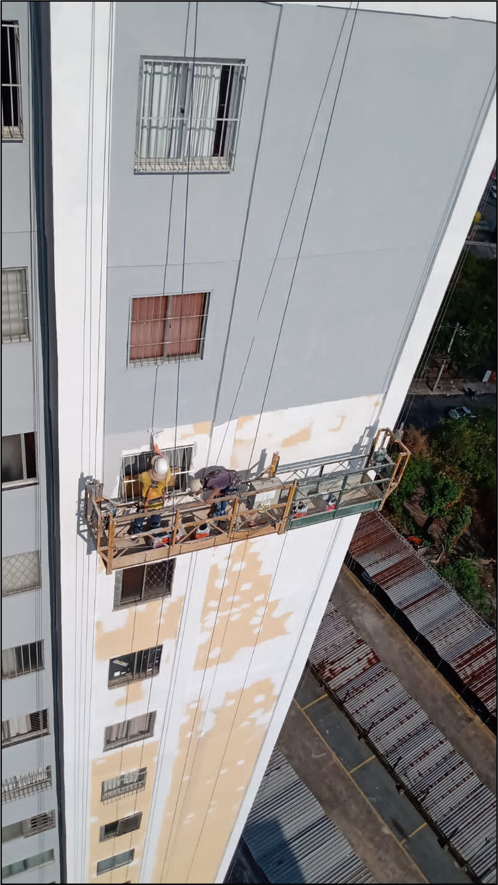

Segurança no trabalho
Equipe registrada, equipada e treinada para serviços em altura.

Vertical Chão Alpinismo industrial
Reforma predial e serviços em altura
Fachadas limpas, pintadas, impermeabilizadas e seguras, com equipe certificada para trabalhar onde andaime vira custo e atraso.
Equipe registrada, equipada e treinada para serviços em altura.
Rotina limpa, acompanhamento técnico e menos transtorno para moradores.
Execução planejada para condomínios, síndicos e administradoras.
Materiais adequados, inspeção de fachada e cuidado com detalhes.
A Vertical Chão atua há mais de 15 anos na reforma de fachadas de edifícios residenciais e comerciais em Minas Gerais. O trabalho por alpinismo industrial permite acessar áreas difíceis com segurança, agilidade e menos interferência na rotina do condomínio.
A equipe reúne profissionais registrados, treinamentos em NR35, NR18, NR12 e NR6, seguro de vida, uniforme completo e acompanhamento técnico em cada etapa. A empresa também é credenciada para aplicação de EcoGranito.
Da inspeção ao acabamento, a Vertical Chão cuida das etapas críticas para recuperar, proteger e valorizar o prédio.
Correções, recuperação visual e manutenção preventiva para condomínios.
Remoção de sujeira, manchas e resíduos com acesso por corda.
Tratamento de áreas com desplacamento e risco de queda.
Preparação, correção e pintura para renovar a proteção externa.
Criação e reparo para reduzir infiltrações e movimentações indevidas.
Correções em pontos deteriorados antes que o dano avance.
Proteção de fachadas contra água, infiltrações e desgaste.
Inspeção técnica, reposição de rejuntes e orientação para manutenção.
Identificação de revestimentos soltos antes de acidentes.
Vistoria de fachada com registro e encaminhamento técnico.
Aplicação com padrão de acabamento e parceria com fabricante.

Limpeza de fachadas e vidros
Equipes certificadas removem sujeira acumulada e devolvem presença ao edifício com uma operação pensada para segurança, produtividade e rotina do condomínio.
Solicitar avaliação
Reposição de pastilhas
O desplacamento compromete proteção, aparência e segurança. A Vertical Chão localiza os pontos críticos e executa o reparo com técnica para evitar improvisos em altura.
Falar com atendimento
Pintura de fachadas
A pintura começa antes da tinta: preparação de superfície, correções, impermeabilização quando necessário e acabamento alinhado ao padrão do condomínio.
Orçar pintura
Aplicação de Ecogranito
A aplicação exige preparo, respeito às normas e mão de obra treinada. Como credenciada EcoGranito, a Vertical Chão entrega acabamento consistente do início ao fim.
Quero esse acabamentoFotos de serviços executados em altura, com foco em limpeza, manutenção, pintura e recuperação de revestimentos.

"Foi a melhor escolha que fizemos. A empresa executou o serviço com perfeição, sem transtorno, mantendo a obra limpa e organizada todos os dias."
Valéria Moreira, síndica do Edifício Parque dos Pioneiros
"A equipe é completa, com equipamento de segurança, conhecimento de obra e acabamento em estruturas horizontais e verticais."
Luiz Augusto, síndico do Condomínio Edifício Jardim Suíço
"Trabalham com segurança, proteções adequadas e entregam serviço de ótima qualidade. Para obra ou manutenção do condomínio, vale muito a pena."
Idalécio Gomes, administrador do Centro Empresarial Raja Gabaglia 1001
Orçamento e atendimento
Preencha os campos principais para enviar uma mensagem organizada ao atendimento comercial. Nenhum dado fica armazenado neste site.